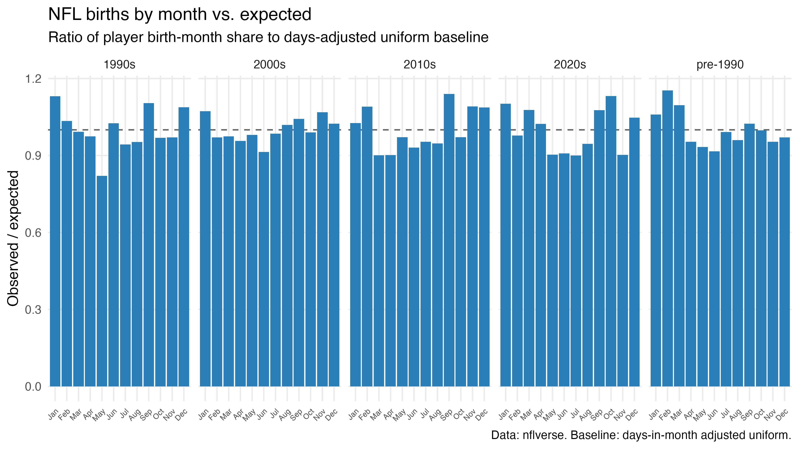

Where NFL players actually come from
A famous 2006 study said pro athletes come from small towns. We re-ran it with modern data, fixed its suburb problem, and found a different story.
The claim we're testing
In 2006, Jean Côté and colleagues published a striking result: American pros in hockey, basketball, baseball, and golf were 11–21x more likely to come from towns of 50,000–100,000 people than from big cities, and cities over 500,000 dramatically underproduced. "Pros come from small towns" became sports-science folklore.
But the study binned athletes by the raw population of their birthplace city. A kid born in a 25,000-person suburb twenty minutes from a major downtown counts as a small-town kid. When Michael asked Côté about this directly, he confirmed: suburbs were never controlled for, proximity to a bigger city was never examined — and the revisit he'd want to see hadn't been done. So we did it.
Method in one line: player birthplaces (and, where available, high-school locations) matched to Census places, with population, land area, and density from the decennial census and ACS — era-appropriate vintages, boroughs and consolidated cities handled, match rates reported.
Finding 1 — The small-town effect doesn't survive the suburb fix
For every rookie era, we compared the share of NFL players born in places of each size against the share of Americans who lived in places that size. A ratio of 1 means a place size produces exactly its share of players.
Small towns don't overproduce. Places under 2,500 people underproduce in every era. The real engine of the NFL is mid-size cities — places of 250,000–500,000 produced nearly 2x their share of players through the 1990s–2010s. And true big cities have slid from roughly proportional (1.07) in the 1990s to 0.82 today.

Data table — representation ratio by place size and era
| Birthplace size | 1990s | 2000s | 2010s | 2020s |
|---|---|---|---|---|
| <2.5k | 0.71 | 0.65 | 0.81 | 0.98 |
| 2.5k–10k | 0.87 | 0.77 | 0.92 | 1.10 |
| 10k–30k | 0.84 | 0.91 | 0.94 | 1.08 |
| 30k–50k | 0.67 | 0.80 | 0.91 | 1.00 |
| 50k–100k | 0.87 | 0.89 | 0.93 | 0.86 |
| 100k–250k | 1.21 | 1.22 | 1.09 | 1.05 |
| 250k–500k | 1.82 | 1.95 | 1.90 | 1.35 |
| 500k+ | 1.07 | 0.96 | 0.83 | 0.82 |
Just as interesting: the effect is flattening. In the 2020s, the mid-size peak decays to 1.35x and nearly every other bin drifts toward 1.0. The geography of the NFL is becoming less special — production is spreading out.
Finding 2 — It's not density either
Côté told Michael that population size is best read as a proxy for the sports environment of a place, and density is the sharper version of that proxy. Sorting every hometown into density deciles tells the same story from a different angle: the middle of the density distribution produces the most players per capita, and the pattern compresses over time.

Finding 3 — Born in X, raised in Y
The 2006 study — and every replication since — used birthplace. But a birthplace is where the hospital was, not where a player learned football. For 4,548 modern players we have both a birthplace and a geocoded high school, and:
More than a third of the "birthplace effect" literature's raw material points at the wrong city. Where we have the high school, we use it — that's the hometown standard for everything below.
The map — pros per million, by hometown county
Per capita, the South glows. The top-producing counties are small Southern counties and one famous city: Noxubee County, MS (611 players per million residents), Fairfax City, VA (494), Morris County, TX (492), and Orleans Parish, LA — New Orleans — which has sent 142 players to the NFL, 392 per million.

A side quest — the relative age effect barely exists in football
The other half of the 2006 paper was when you're born: in youth hockey, January birthdays dominate because age cutoffs make them the oldest kids in their cohort. The NFL shows almost none of this — the strongest month (October) is only about 13% above baseline. Football's school-based, size-sorted development seems to wash out the birthday advantage that club-cutoff sports amplify. That contrast is the point: where matters in football; when matters in hockey.

What this doesn't show (yet)
- Money. The pay-to-play hypothesis — are pros increasingly coming from richer zip codes? — needs the census income join we're finishing next, and it's where football (school-based, cheap) versus baseball and hockey (club-based, expensive) should diverge sharply.
- Other sports. This page is NFL-only. The 2006 paper's headline sports (hockey, baseball, basketball) come next; the data sources are already verified.
- Pre-1990 rookies. ESPN's records thin out before 1990, so the era comparison starts there. A Pro-Football-Reference backfill can extend it to the 1960s.
Honest limitations
- Birthplace coverage is ~90% of 1990+ rookies (96% for 2020s rookies, ~80% for the 2000s–2010s) — missingness is concentrated in shorter-career players, and we haven't measured whether it correlates with geography.
- Census place populations currently cover incorporated places; census-designated places (some suburbs) join the denominator in the next data pass. Matched players in those places (~3–6% per era) are excluded from the size-bin chart and counted in its caption.
- Era comparisons use the nearest census vintage (2000 / 2010 / 2023), not the exact childhood year, and stick to birthplace only — high-school data exists mostly for recent players, and switching proxies mid-timeline would fake a trend.
- Township-form municipalities (New Jersey especially) aren't Census "places" and account for most of the ~3% of players we couldn't match.